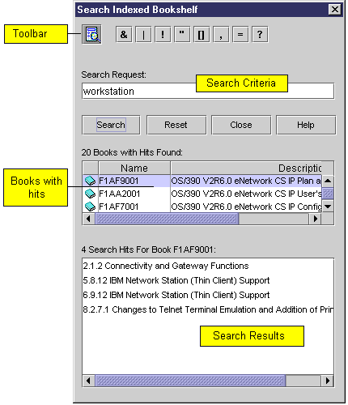

| An Indexed Bookshelf Search is a high speed
search of a bookshelf using a specially created index file. An Indexed
Bookshelf Search is only performed if an index file is associated with
the Bookshelf and is located within one of the user-defined directories.
In the List of Books for an Indexed Bookshelf, all books that have been
built into the Search Index are designated with a special indexed book
icon.
Search an Indexed Bookshelf To search an indexed bookshelf, enter the search criteria into the SearchRequest panel and click Search. The books with matches appear in the Books with Search Results window. (After the search, the name of this window changes to x Books with Hits Found.) Click on a book in this list to see the topics in the book in which matches were found. This list of topics appears under Search Results for Book. (After the search, the name of this window changes to x Search Hits For Book xxxxxxxx.) Double-click on a topic to open the selected book in the Book Reader window. The book will open at the selected topic. Words that were matched are highlighted in red. Several options that allow you to customize the search are explained below. |
Customizing the Search - Using Boolean Operators
Additional Boolean operator buttons may be displayed or hidden using the following button:
| Click Advanced search (Default) |
| The following operators and symbols may be included in the search criteria by entering them either directly from the keyboard, or using the advanced search options: |
| & | logical AND |
| | | logical OR |
| ! | logical NOT |
| ' ' | quoted phrase
Takes the character between the two single-quotes as a literal. Used only around Boolean operators and symbols otherwise having meaning to a search request. |
| [ ] | parenthesized expression
Controls the order of precedence of Boolean operations. |
| , | list separator
Word or phrase separator |
| = | equal sign |
| ? | wildcard character
|
Search Control Buttons
| Search | Starts the search process and returns the results in the Search Results panel. |
| Reset | Clears the Search Request window and returns the options to their default state. |
| Close | Closes the search window. |
| Help | Displays the help screen. |